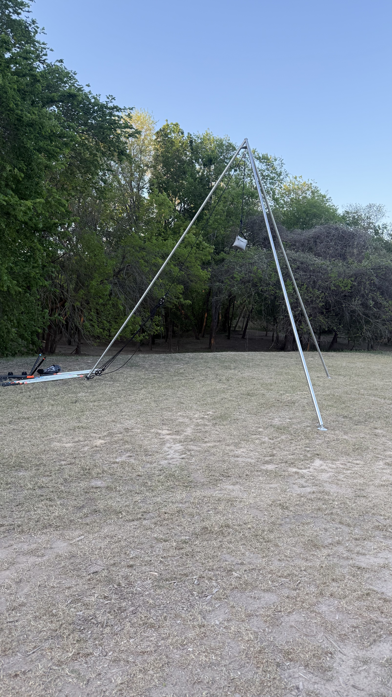

Aerial Rig
16ft Tripod · Daily Teardown

Performances utilize a self-contained 16ft tripod aerial rig, brought, set up, and operated
by the performer. The rig is torn down following performances each day to ensure equipment
safety — protecting the apparatus from overnight weather, theft, and incidental damage,
and giving production crew a clean stage between days.
- Performer-supplied 16ft tripod, hoop, hammock, silks, and pentagram apparatus
- 4:1 pulley system for safe load management
- Setup & teardown handled by performer (allow 30–45 minutes each)
- Requires level ground, 18ft overhead clearance preferred, 12ft minimum clearance perimeter
- Daily teardown means the rig isn't visible as dead-stage between performance days
- Weather contingency built in — rig packs down quickly if storms move through
- Other performers welcome to use the rig — coordination required for rigging and apparatus swaps
Night Spectacle
LED Wings After Dark
For nighttime stiltwalking sets — particularly Astralys on Sunday — the wing rig is fully
programmable LED. Soft starfields, slow-pulsing nebulae, gentle breath-timed light cycles.
The wings transform the character from "flowing white robes" into a six-foot animated galaxy
that hushes a crowd from across a field.
- Programmable patterns synced to the character's pace and breath
- Battery-powered, no cabling required
- Charges between sets — power access at green room appreciated
- Pattern library customizable for venue / theme on request
Stage Friendly
Simulated Programmed Fire
For venues where open-flame performance isn't permitted — or simply preferable for safety,
insurance, or stage logistics — the Ignix character delivers full phoenix-energy flow art
using LED fire fans and an LED fire mask. Programmed flame patterns ripple across the
fans in convincing crackle and flicker; the mask glows like coals across her face.
Why this matters
Fire energy without the fire permits.
Performs on any stage. No fuel handling, no safety officer requirement, no flame-retardant
flooring, no insurance riders. The audience reads it as fire; production reads it as
plug-and-play.
On-Site Support
Rigging Assistance & Onsite Base
- Rigging support available — can provide rigging expertise and equipment assistance for rig setup and apparatus swaps
- 30ft RV onsite — provides a mobile base for costume changes, quick breaks, and equipment storage between sets
- Green room power access appreciated for battery recharges on LED rigs
Stage Request
Desert Dwellers Set
Request to perform on stage during the Desert Dwellers set.
Desert Dwellers' soundscape — that organic, pulsing, ceremonial-bass-meets-tribal energy —
is the perfect home for several characters in this lineup. Their music holds space for slow
ritual movement and sudden percussive accents in equal measure, which lets aerial and flow
work breathe at full theatrical scale.
Suggested character pairings for that set, depending on time of day:
- Zahara (LED dragon staff) — sinuous belly-dance flow that mirrors the band's hypnotic rhythm
- Morwenna (pentagram aerial) — ceremonial geometry for the sacred-bass moments
- Astralys (LED wings stilt) — slow-time celestial roaming during the deeper, drone-heavier passages
- Saira (silk fans flow) — incense-smoke movement against the more middle-eastern textures in their set
Open to producer/artist input on which character lands best. Happy to coordinate with the
Desert Dwellers production team on cues, set timing, and stage geometry.
✧
Performer
Caroline Godwin
Caroline Godwin is a Las Vegas–based performer specializing in aerial, LED flow arts, and
stiltwalking. Trained in the heart of America's entertainment capital, Caroline has brought
her work to stages across the country — from intimate festival grounds to large-scale
production shows — adapting seamlessly between roaming character work, mid-air aerial sets,
and high-energy LED flow performances.
What sets Caroline apart is the range: a single performer who can transform across an entire
weekend, switching between disciplines, color worlds, and character energies without losing
the through-line that ties every set together. From towering stilt characters that turn heads
from across a field, to hypnotic aerial work on a 16ft tripod rig, to LED prop performances
that translate perfectly to dusk and after-dark lineups — one performer, a full pantheon.